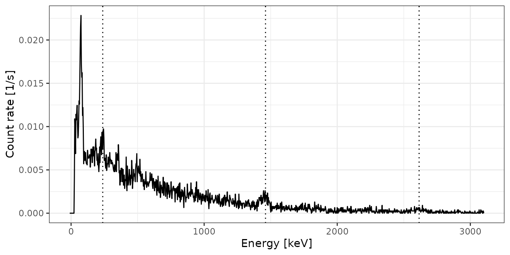
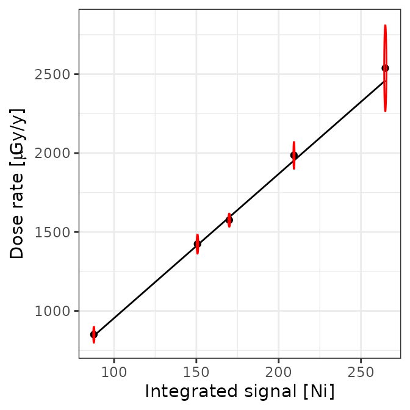
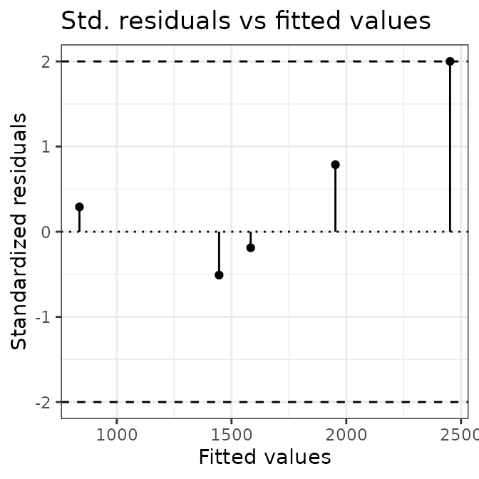
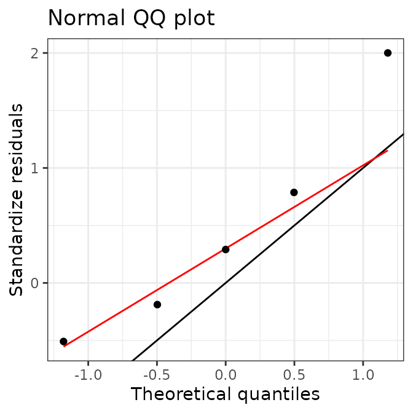
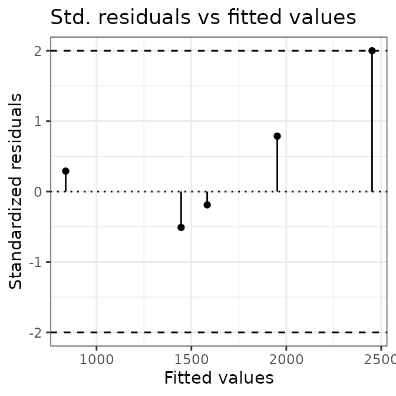
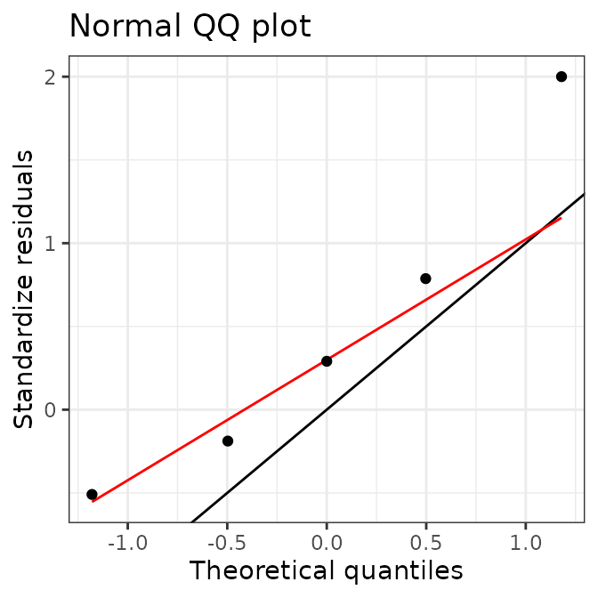
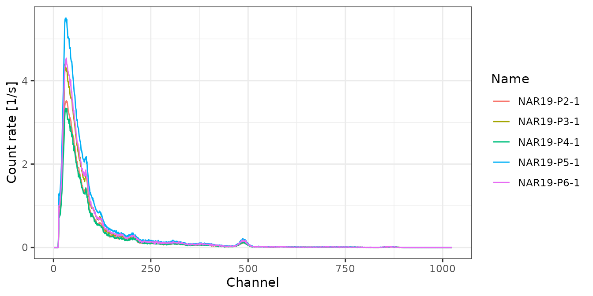

This vignette shows how to build a calibration curve for gamma dose rate prediction.
Import Files
# Import CNF files for calibration
spc_dir <- system.file("extdata/AIX_NaI_1/calibration", package = "gamma")
(spc <- read(spc_dir))
#> A collection of 5 gamma spectra: BRIQUE, C341, C347, GOU, PEP
# Import a CNF file of background measurement
bkg_dir <- system.file("extdata/AIX_NaI_1/background", package = "gamma")
(bkg <- read(bkg_dir))
#> Gamma spectrum:
#> * name: PB
#> * date: 2019-03-27 12:06:02
#> * live_time: 7707.42
#> * real_time: 7714.93
#> * channels: 1024
#> * energy_min: -7
#> * energy_max: 3124.91Energy Scale Calibration
Reference Spectra
# Spectrum pre-processing
# Remove baseline for peak detection
bsl <- spc %>%
signal_slice(-1:-40) %>%
signal_stabilize(f = sqrt) %>%
signal_smooth(method = "savitzky", m = 21) %>%
signal_correct()BRIQUE
# Peak detection
pks <- peaks_find(bsl[["BRIQUE"]])
# Set energy values
set_energy(pks) <- c(238, NA, NA, NA, 1461, NA, NA, 2615)
# Adjust the energy scale
BRIQUE <- energy_calibrate(spc[["BRIQUE"]], pks)
C341
# Spectrum pre-processing and peak detection
pks <- peaks_find(bsl[["C341"]])
# Set energy values
set_energy(pks) <- c(238, NA, NA, NA, 1461, NA, 2615)
# Adjust the energy scale
C341 <- energy_calibrate(spc[["C341"]], pks)
C347
# Spectrum pre-processing and peak detection
pks <- peaks_find(bsl[["C347"]], span = 10)
# Set energy values
set_energy(pks) <- c(238, NA, NA, NA, NA, 1461, NA, 2615)
# Adjust the energy scale
C347 <- energy_calibrate(spc[["C347"]], pks)GOU
# Spectrum pre-processing and peak detection
pks <- peaks_find(bsl[["GOU"]])
# Set energy values
set_energy(pks) <- c(238, NA, NA, NA, 1461, NA, NA, 2615)
# Adjust the energy scale
GOU <- energy_calibrate(spc[["GOU"]], pks)
PEP
# Spectrum pre-processing and peak detection
pks <- peaks_find(bsl[["PEP"]])
# Set energy values
set_energy(pks) <- c(238, NA, NA, NA, 1461, NA, NA, 2615)
# Adjust the energy scale
PEP <- energy_calibrate(spc[["PEP"]], pks)
Background Spectrum
# Pb212, K40, Tl208
lines <- data.frame(
channel = c(86, 496, 870),
energy = c(238, 1461, 2615)
)
bkg_scaled <- energy_calibrate(bkg, lines = lines)
Signal Integration
spc_scaled <- list(BRIQUE, C341, C347, GOU, PEP)
spc_scaled <- methods::as(spc_scaled, "GammaSpectra")Count Threshold
# Integration range (in keV)
Ni_range <- c(200, 2800)
# Integrate background spectrum
(Ni_bkg <- signal_integrate(bkg_scaled, range = Ni_range, energy = FALSE))
#> value error
#> 1.40046864 0.01906326
# Integrate reference spectra
(Ni_spc <- signal_integrate(spc_scaled, range = Ni_range, background = Ni_bkg,
energy = FALSE, simplify = TRUE))
#> value error
#> BRIQUE 209.2953 0.2135497
#> C341 87.7405 0.2249214
#> C347 150.6917 0.2929845
#> GOU 170.0013 0.3105710
#> PEP 264.7712 0.3969934Energy Threshold
# Integration range (in keV)
NiEi_range <- c(200, 2800)
# Integrate background spectrum
(NiEi_bkg <- signal_integrate(bkg_scaled, range = NiEi_range, energy = TRUE))
#> value error
#> 1108.0565661 0.5362181
# Integrate reference spectra
(NiEi_signal <- signal_integrate(spc_scaled, range = NiEi_range,
background = NiEi_bkg, energy = TRUE,
simplify = TRUE))
#> value error
#> BRIQUE 110923.34 4.933826
#> C341 46657.02 5.215421
#> C347 81717.33 6.843667
#> GOU 89644.92 7.152993
#> PEP 139711.03 9.136525Calibration Curve
Summary
# Get reference dose rates
data("clermont")
doses <- clermont[, c("gamma_dose", "gamma_error")]
# Metadata
info <- list(
laboratory = "CEREGE",
instrument = "InSpector 1000",
detector = "NaI",
authors = "CEREGE Luminescence Team"
)
# Build the calibration curve
AIX_NaI <- dose_fit(
spc_scaled, background = bkg_scaled, doses = doses,
range_Ni = Ni_range, range_NiEi = NiEi_range, alpha = 0.05,
details = info
)
# Summary
summarise(AIX_NaI)
#> $Ni
#> $Ni$residuals
#> [1] 33.402986 7.968894 6.460507 -18.670747 78.089036
#>
#> $Ni$coefficients
#> Estimate Std. Error
#> Intercept 40.013121 41.8457283
#> Slope 9.140417 0.2720195
#>
#> $Ni$MSWD
#> [1] 0.8938093
#>
#> $Ni$df
#> [1] 3
#>
#> $Ni$p_value
#> [1] 0.4433926
#>
#>
#> $NiEi
#> $NiEi$residuals
#> [1] 33.906630 12.519006 -21.932843 -8.121213 86.160947
#>
#> $NiEi$coefficients
#> Estimate Std. Error
#> Intercept 27.88537142 42.028251148
#> Slope 0.01735135 0.000514213
#>
#> $NiEi$MSWD
#> [1] 0.9375068
#>
#> $NiEi$df
#> [1] 3
#>
#> $NiEi$p_value
#> [1] 0.421443
# Plot curve
plot(AIX_NaI, model = "Ni") +
ggplot2::theme_bw()
plot(AIX_NaI, model = "NiEi") +
ggplot2::theme_bw()


 
Predict New Dose Rates
# Import CNF files for dose rate prediction
test_dir <- system.file("extdata/AIX_NaI_1/test", package = "gamma")
(test <- read(test_dir))
#> A collection of 5 gamma spectra: NAR19-P2-1, NAR19-P3-1, NAR19-P4-1, NAR19-P5-1, NAR19-P6-1
# Inspect spectra
plot(test, yaxis = "rate") +
ggplot2::theme_bw()
# Dose rate prediction
# (assuming that the energy scale of each spectrum was adjusted first)
(rates <- dose_predict(AIX_NaI, test, sigma = 2))
#> names dose_Ni error_Ni dose_NiEi error_NiEi
#> 1 NAR19-P2-1 925.2131 55.17751 898.0336 53.22724
#> 2 NAR19-P3-1 1116.4969 66.54093 1089.8538 64.59651
#> 3 NAR19-P4-1 894.0082 53.34881 869.4770 51.53473
#> 4 NAR19-P5-1 1391.7762 82.94683 1369.9492 81.19798
#> 5 NAR19-P6-1 1171.7514 69.91894 1152.1000 68.28605R session
#> R version 4.1.0 (2021-05-18)
#> Platform: x86_64-apple-darwin17.0 (64-bit)
#> Running under: macOS Catalina 10.15.7
#>
#> Matrix products: default
#> BLAS: /Library/Frameworks/R.framework/Versions/4.1/Resources/lib/libRblas.dylib
#> LAPACK: /Library/Frameworks/R.framework/Versions/4.1/Resources/lib/libRlapack.dylib
#>
#> locale:
#> [1] en_US.UTF-8/en_US.UTF-8/en_US.UTF-8/C/en_US.UTF-8/en_US.UTF-8
#>
#> attached base packages:
#> [1] stats graphics grDevices utils datasets methods base
#>
#> other attached packages:
#> [1] magrittr_2.0.1 gamma_1.0.1.9000
#>
#> loaded via a namespace (and not attached):
#> [1] Rcpp_1.0.6 highr_0.9 compiler_4.1.0 pillar_1.6.1
#> [5] tools_4.1.0 digest_0.6.27 evaluate_0.14 memoise_2.0.0
#> [9] lifecycle_1.0.0 tibble_3.1.2 gtable_0.3.0 pkgconfig_2.0.3
#> [13] rlang_0.4.11 yaml_2.2.1 pkgdown_1.6.1 xfun_0.24
#> [17] fastmap_1.1.0 rxylib_0.2.6 stringr_1.4.0 knitr_1.33
#> [21] desc_1.3.0 fs_1.5.0 vctrs_0.3.8 systemfonts_1.0.2
#> [25] rprojroot_2.0.2 grid_4.1.0 glue_1.4.2 R6_2.5.0
#> [29] textshaping_0.3.5 fansi_0.5.0 rmarkdown_2.9 farver_2.1.0
#> [33] ggplot2_3.3.4 IsoplotR_4.0 scales_1.1.1 htmltools_0.5.1.1
#> [37] ellipsis_0.3.2 colorspace_2.0-2 labeling_0.4.2 ragg_1.1.3
#> [41] utf8_1.2.1 stringi_1.6.2 munsell_0.5.0 cachem_1.0.5
#> [45] crayon_1.4.1